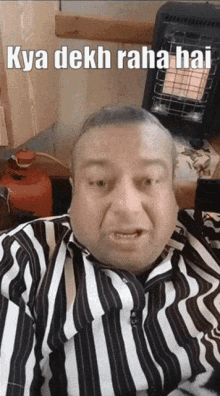

Wikipedia
- Conclusion :
- The COVID-19 pandemic has left an indelible mark on human history, exposing vulnerabilities in global healthcare systems, economies, and societies. As the world slowly recovers, it's essential to recognize the valuable lessons learned:
- Global solidarity and cooperation are crucial in combating pandemics.
- Investment in healthcare infrastructure and research is vital.
- Preparedness and resilience are key to mitigating the impact.
- Moving forward, we must:
- Strengthen international partnerships.
- Develop innovative solutions for pandemic prevention and response.
- Prioritize public health, equity, and access.
- As we reflect on the pandemic's devastating consequences, we're reminded of humanity's capacity for resilience, adaptability, and compassion. By harnessing this collective strength, we can build a more resilient, equitable, and connected world, better equipped to face future challenges.
- Alternative conclusions :
- "The COVID-19 pandemic serves as a wake-up call, prompting us to reevaluate global priorities and solidarity."
- "As the world rebuilds, we must integrate pandemic preparedness into our collective consciousness."
- "The legacy of COVID-19 will be shaped by our ability to learn, adapt, and unite."
Final thoughts:
- "Hope lies in humanity's capacity to overcome adversity."
- "Together, we can create a brighter, more resilient future."
- "The pandemic's impact will be remembered, but its lessons will shape a better tomorrow."
To go back Click here

Photo
WHO Official
 Twitter
Twitter
Youtube
 Facebook
Facebook